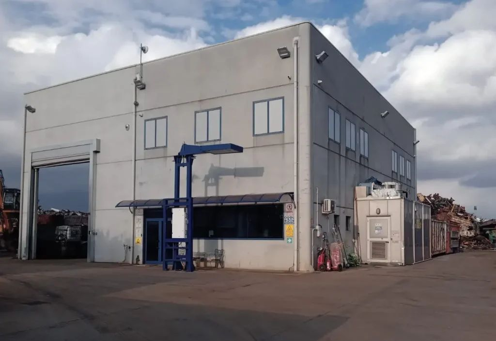
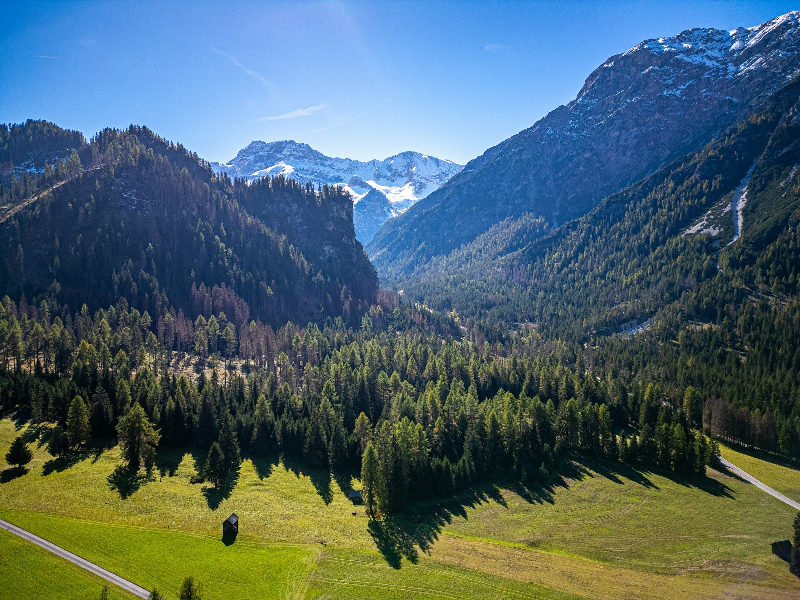
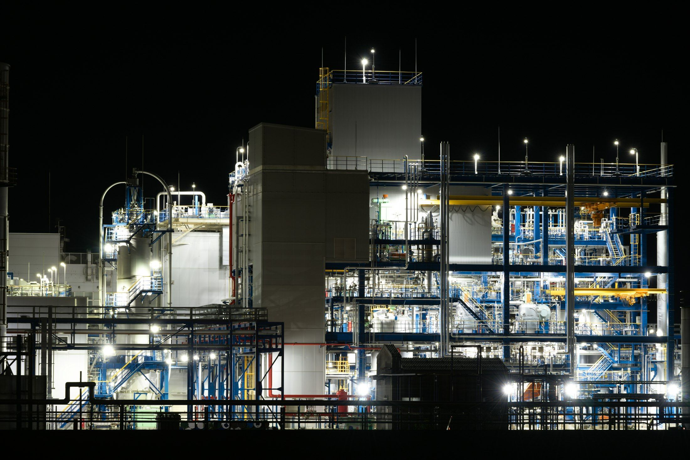

01
Raccolta e trasporto rifiuti non pericolosi
Gestione dei rifiuti pericolosi con mezzi e imballaggi a norma, dalla classificazione allo smaltimento.
Anteprima riservata
Il nuovo sito di Dal Bo' Metalli
umbra® studio web

Raccolta e trasporto rifiuti non pericolosi San Fior Treviso
Da oltre 40 anni, servizi di raccolta e recupero rifiuti
L'azienda
Dal Bo' Metalli lavora da San Fior: raccolta e trasporto rifiuti non pericolosi, recupero metalli e materiali riciclabili e programmazione ritiri, per province di Treviso, Pordenone e Belluno.
Servizi
01 / 04

Gestione dei rifiuti pericolosi con mezzi e imballaggi a norma, dalla classificazione allo smaltimento.

Ritiro e recupero di metalli ferrosi e non ferrosi.

Ricezione, selezione e avvio a recupero dei materiali, perché tornino a essere risorse.

Cassoni e container posizionati dove servono e ritirati pieni, con trasporto all'impianto.

San Fior · Treviso
Il metodo
Ogni intervento segue lo stesso percorso: tracciabile, documentato, senza passaggi lasciati al caso.
Il materiale arriva in impianto e viene pesato.
Verifica di codici, documenti e qualità del carico.
Separazione per tipologia di materiale.
Ciò che è recuperabile torna in filiera.
Il materiale esce come risorsa.

Lavora con noi
Mandateci il vostro curriculum: lo leggiamo tutto, e vi richiamiamo.
Contatti
Enti, aziende e privati: indicateci il servizio e la zona, vi rispondiamo con tempi e preventivo.
Anteprima riservata · preparata per Dal Bo' Metalli
Abbiamo usato le foto e le informazioni già pubbliche dell'azienda. L'anteprima è gratuita: se vi piace, acconto del 25% e saldo quando il sito è online, con rimborso completo entro 30 giorni dalla messa online. Hosting, dominio, privacy e cookie li gestiamo noi.
umbra® studio web · umbragency.it